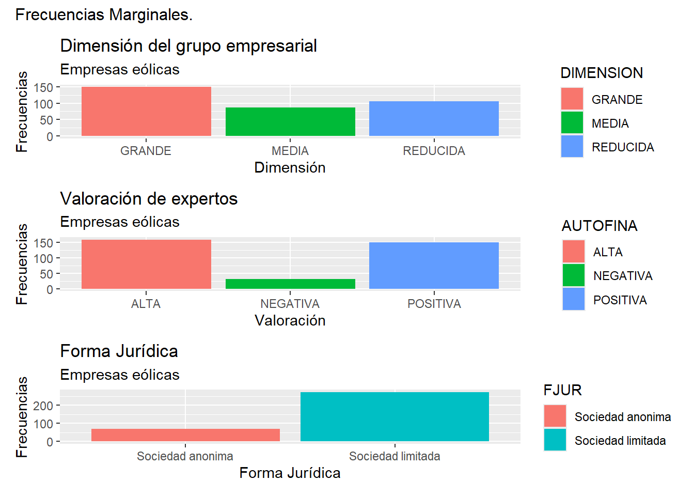
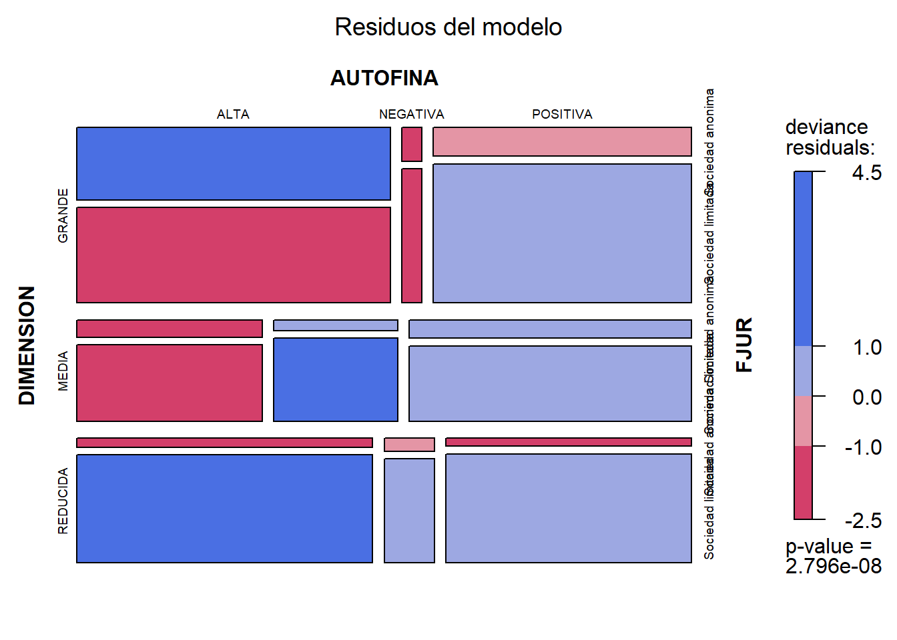

Capítulo 10 Análisis de Datos Cualitativos.
10.1 Introducción.
En numerosas ocasiones la información con que el analista debe enfrentarse es de naturaleza cualitativa, esto es, la información se recoge en características no numéricas o atributos (o factores o variables categóricas o cualitativas). Cuando ocurre esto, es necesario recurrir a técnicas de explotación específicas para este tipo de datos. Así, en este capítulo vamos a explorar algunos métodos para extraer información útil cuando los datos de los que disponemos son categóricos.
En estos casos, la información suele sintetizarse y presentarse mediante las denominadas “tablas de contingencia”. En este tipo de tablas, se muestran las frecuencias conjuntas, es decir, el número de casos que comparten los distintos niveles o categorías de los diferentes factores.
Cuando se trabaja con varios factores o atributos, representados en su correspondiente tabla de contingencia, uno de los análisis más interesantes es determinar si existe asociación entre los factores o atributos. Esto es, si se aprecia algún tipo de relación estadística entre estas variables categóricas o cualitativas, en el sentido de si se puede afirmar que el hecho de que los casos de la muestra tomen ciertos niveles o categorías en unos factores, hace que estos mismos casos tiendan a tomar ciertos niveles o categorías de otro u otros factores.
10.2 Tablas de contingencia, y asociación entre dos atributos o factores.
Comenzaremos con el caso más sencillo, en el que los casos de nuestra muestra se distribuyen entre las categorías o niveles de dos atributos o factores. En este caso, la tabla de contingencia que presente los datos de esta situación será una simple tabla de doble entrada. En las filas de la tabla se dispondrán las categorías de uno de los factores, y en las columnas de la tabla se situarán las categorías del otro factor.
Para ilustrar el tratamiento de una tabla de contingencia bidimensional, vamos a trabajar con los datos correspondientes a 51 empresas de generación eléctrica presentes en el archivo de Microsoft® Excel® “eolica_contingencia.xlsx”. Este archivo cuenta con 3 hojas, los datos en cuestión se encuentran en la que tiene por nombre “Datos”.
Dentro de “Datos”, existen dos variables categóricas, atributos o factores: la variable DIMENSION, que tiene, a su vez, tres categorías dependiendo del número de empresas que integradas en la matriz de la empresa en cuestión (“GRANDE”, “MEDIA” o “REDUCIDA”); y la variable VALORACION, que cuenta con tres categorías dependiendo de la opnión de un panel de expertos en cuanto a la situación económica de la empresa (“OPTIMA”, “NORMAL”, “PESIMA”). Nuestra intención es analizar si existe evidencia sobre asociación entre las dos variables categóricas, en el sentido de que los casos tienden a concentrarse con cierta facilidad en ciertas combinaciones de categorías de uno y otro factor, y/o a no posicionarse en otras combinaciones; o si por el contrario no se puede afirmar que exista asociación de este tipo.
El código de R que iremos aplicando se encuentra en el script “correspondencias_eolica.R”. Trabajaremos en un proyecto específico de RStudio, si así lo valoramos como conveniente (en este ejemplo, el proyecto “correspondencias”).
Al abrir el script en el editor de RStudio, lo primero que veremos será la instrucción para limpiar la memoria de objetos. Tras ello, se procede a la importación de los datos del fichero de Excel. Tras importar las variables, se procede a ajustar la importación para que la primera columna pase a ser el nombre de los casos (filas) del data frame que recibe y almacena los datos. Este data frame se denomina, por ejmplo, “eolicas”. Con un summary() comprobamos que las variables se han importado correctamente:
# Analisis de correspondencias simple de eolicas
# Disculpen por la falta de tildes!
rm(list = ls())
# DATOS
# Importando datos
library (readxl)
eolicas <- read_excel("eolica_contingencia.xlsx", sheet ="Datos")
eolicas <- data.frame(eolicas, row.names = 1)
summary (eolicas)## MARGEN SOLVENCIA COM
## Min. :-1159.297 Min. :-66.95 Length:51
## 1st Qu.: 5.677 1st Qu.: 16.32 Class :character
## Median : 34.252 Median : 42.98 Mode :character
## Mean : 47.643 Mean : 45.76
## 3rd Qu.: 53.388 3rd Qu.: 80.31
## Max. : 1790.123 Max. :100.00
## NA's :9
##
## FJUR ING NCOMP
## Length:51 Min. : 0.29 Min. : 0
## Class :character 1st Qu.: 97.59 1st Qu.: 1
## Mode :character Median : 1241.39 Median : 31
## Mean : 10705.06 Mean : 1655
## 3rd Qu.: 6766.47 3rd Qu.: 170
## Max. :255852.00 Max. :72434
## NA's :9
##
## RES ACTIVO FPIOS
## Min. :-3274.32 Min. : 3.0 Min. : -1919.42
## 1st Qu.: 0.30 1st Qu.: 160.5 1st Qu.: 71.57
## Median : 57.76 Median : 2420.5 Median : 888.78
## Mean : 2203.99 Mean : 67897.9 Mean : 8991.25
## 3rd Qu.: 622.08 3rd Qu.: 16379.6 3rd Qu.: 6413.52
## Max. :78290.00 Max. :2429299.0 Max. :148251.00
## NA's :5
##
## RENECO RENFIN LIQUIDEZ
## Min. :-103.156 Min. :-596.79 Min. : 0.006
## 1st Qu.: 0.000 1st Qu.: 0.00 1st Qu.: 0.667
## Median : 3.165 Median : 12.94 Median : 1.833
## Mean : 6.559 Mean : 10.94 Mean : 17.853
## 3rd Qu.: 13.329 3rd Qu.: 37.99 3rd Qu.: 6.010
## Max. : 95.013 Max. : 144.04 Max. :541.752
## NA's :2
##
## APALANCA AUTOFIN DIMENSION
## Min. :-312.62 Min. :-0.401 Length:51
## 1st Qu.: 0.00 1st Qu.: 0.243 Class :character
## Median : 18.73 Median : 0.508 Mode :character
## Mean : 333.41 Mean : 3.468
## 3rd Qu.: 266.68 3rd Qu.: 4.093
## Max. :6197.54 Max. :42.156
## NA's :20
##
## AUTOFINA VALORACION
## Length:51 Length:51
## Class :character Class :character
## Mode :character Mode :characterA continuación, creamos otro data frame, de nombre, por ejemplo, “originales”, con los dos atributos analizados: el factor DIMENSION y el factor VALORACION. Se comprueba si existen observaciones con missing values y, en tal caso, se eliminan dichas observaciones aplicando el filtro apropiado, a partir de la función filter() del paquete {dplyr}:
# Seleccionando factores/atributos para el analisis
library(dplyr)
originales<-select(eolicas, DIMENSION, VALORACION)
summary (originales)## DIMENSION VALORACION
## Length:51 Length:51
## Class :character Class :character
## Mode :character Mode :character
## [1] DIMENSION VALORACION
## <0 rows> (o 0- extensión row.names)En el ejemplo, se comprueba que no existen casos con missing values, por lo que la tabla queda en blanco y no se descarta ninguna observación.
La siguiente etapa es la construcción de la “tabla de contingencia”. La función fundamental es table() que, como sabemos, hace un recuento de los casos (frecuencias) en los que una variable toma un determinado valor (o en los que un atributo adopta una determinada categoría o nivel). Cuando esta función se aplica a más de una variable o atributo, hace un recuento de los casos que adoptan las posibles combinacionesse entre valores/categorías o niveles de las variables o atributos implicados. Cuando se trata de dos atributos, por tanto, table() construye una tabla de contingencia mediante la formulación de una tabla de doble entrada. En nuestro ejemplo, a la tabla de contingencia la hemos denominado, por ejemplo, “tab.originales”. Luego, la hemos presentado con un formato de tabla elaborado con la función kable() del paquete {knitr}, y algunas funciones adicionales del paquete {kableExtra}:
# TABLA DE CONTINGENCIA
tab.originales <- table(originales)
library(knitr)
library(kableExtra)
knitr.table.format = "html"
addmargins(tab.originales) %>%
kable(format = knitr.table.format,
caption="Empresas eólicas") %>%
kable_styling(full_width = F,
bootstrap_options = "striped", "bordered", "condensed",
position = "center",
font_size = 12) %>%
add_header_above(c(DIMENSION = 1, VALORACION = 3, " " = 1),
bold=T,
line=T) %>%
row_spec(0, bold= T, align = "c") %>%
column_spec(1, bold = T)| NORMAL | OPTIMA | PESIMA | Sum | |
|---|---|---|---|---|
| GRANDE | 9 | 6 | 4 | 19 |
| MEDIA | 0 | 6 | 4 | 10 |
| REDUCIDA | 4 | 15 | 3 | 22 |
| Sum | 13 | 27 | 11 | 51 |
Es de destacar que, en el código de la tabla, se ha añadido la función addmargin() para que se añadan las frecuencias marginales de las categorias de ambos atributos (sumas de filas y columnas). Además, se ha utilizado la función add_header_above() del paquete {kableExtra} para añadir filas superiores al encabezado, que ocupen distintas cantidades de columnas.
La tabla también se puede representar gráficamente mediante la función mosaic() de la librería {vcd}, con lo que se percibirá mejor la magnitud de las frecuencias conjuntas (celdas de la tabla). A mayor frecuencia, mayor área del rectángulo correspondiente:
library (vcd)
mosaic(tab.originales,
main = "Eólicas: Dimensión Matriz y Valoración Expertos.",
shade = T,
gp = shading_Marimekko(tab.originales),
main_gp = gpar(fontsize = 14),
sub_gp = gpar(fontsize = 12))Los argumentos de la función mosaic() juegan el siguiente papel:
tab.originales: Es la tabla de contingencia que contiene los datos a visualizar en el gráfico mosaico. Debe ser una tabla de contingencia creada con la funcióntable()o una matriz con datos categóricos.main: Título principal del gráfico.shade: Si se establece enTRUE, aplica un coloreado a las celdas del mosaico; si esFALSEtodas los rectángulos serán del mismo color.gp: Parámetros gráficos para personalizar la apariencia del gráfico. En este caso, se usashading_Marimekko()para aplicar un sombreado específico. Hay otras funciones de parámetros gráficos comoshading_hcl(),shading_max, o cualquier función personalizada que devuelva un objeto de clasegpar.main_gp: Parámetros gráficos para el título principal, como el tamaño de la fuente. Se pueden especificar atributos como, por medio de la funcióngpar(), comofontsize,fontfamily,col, etc.sub_gp: Igual que el caso anterior; pero para el subtítulo del gráfico de mosaico.
En nuestro ejemplo, podemos apreciar con claridad como una importante proporción de los casos (empresas) se concentran en la combinación de valoración óptima y dimensión de la empresa matriz reducida. También es destacable la combinación de valoración normal y dimensión de la compañía matriz grande. Por el lado opuesto, destaca la combinación de valoración normal y dimensión de la matriz media, que no posee ningún caso (frecuencia 0), y valoración pésima y dimesión de la matriz reducida.
Otro modo de visualizar la estructura de la tabla es hacer gráficos de barras que muestren las frecuencias de las categorías de cada factor (frecuencias marginales), aunque en cada barra se pueda diferenciar, además, los casos o frecuencias que pertenecen a las categorías del otro factor. En nuestro caso:
# Representando frecuencias de categorias en factores
library (ggplot2)
library (patchwork)
g1 <- ggplot(originales, mapping= aes(x= DIMENSION, fill = VALORACION)) +
geom_bar() +
ggtitle("Tamaño de la matriz.", subtitle = "Empresas eólicas") +
ylab("Frecuencias") +
xlab("Dimensión")
g2 <- ggplot(originales, mapping= aes(x= VALORACION, fill = DIMENSION)) +
geom_bar() +
ggtitle("Valoración Expertos", subtitle = "Empresas eólicas") +
ylab("Frecuencias") +
xlab("Valoración")
(g1 + g2) + plot_annotation(title = "Frecuencias Marginales.",
theme = theme(plot.title = element_text(size = 14)))Se observa cómo, en cuanto al atributo o factor DIMENSION, la categoría más frecuente es la dimensión “REDUCIDA”, mientras que la categoría que menos se da en la muestra es, destacadamente, “MEDIA”. Además, como ya se ha comentado, destaca que la mayor parte de los casos de la categoría “REDUCIDA” tienen una valoración de “OPTIMA” en el factor VALORACION. También llama la atención que en la categoría “MEDIA” no existen casos con valoración “NORMAL”. En cuanto al gráfico del atributo o factor “VALORACION”, el mayor número de frecuencias, de modo muy destacado, se concentran en la categoría “OPTIMA”, estando las otras dos categorías bastante igualadas en cuanto al número de casos. Es reseñable también que, en la categoría “OPTIMA”, la mayor parte de casos tienen una dimensión “REDUCIDA”.
Como ya hemos dicho, una de las cuestiones más importantes en el análisis de tablas de contingencia es determinar si existe asociación entre ambos atributos o factores (valoración de las empresas y dimensión de las compañías matrices), en el sentido de poder plantear que los casos (empresas) concentradas en ciertas categorías concretas de uno de los factores o atributos tienden a concentrarse, simultáneamente, en ciertas categorías concretas del otro factor o atributo; o al revés: que el hecho de que los casos no tiendan a concentrarse en ciertas categorías de uno de los factores o atributos está relacionado con que no se concentren en ciertas categorías del otro factor o atributo. En nuestro ejemplo, ya hemos señalado algunas combinaciones de categorías que podrían llevar a pensar a que existe cierto grado de asociación entre los atributos DIMENSION y VALORACION.
Existen diferentes pruebas para verificar la posible existencia de asociación entre dos factores. Una de ellas es el contraste o prueba de asociación de Pearson. Este contraste se base en un estadístico del contraste, que bajo la hipótesis nula de que no existe asociación sigue una distribución Chi/Ji Cuadrado. El estadístico, en realidad, es una medida global de lo distante que está la tabla de contingencia observada (sus frecuencias conjuntas) respecto a la estructura “ideal” que tendría que tener si existiera independencia “total” entre ambos atributos. Así, el estadístico del contraste de la prueba de asociación de Pearson es:
\[ \chi^2 = \sum_{i=1}^{r} \sum_{j=1}^{c} \frac{(O_{ij} - E_{ij})^2}{E_{ij}} \]
donde:
( \(O_{ij}\) ) es la frecuencia observada en la celda ( (i, j) ).
( \(E_{ij}\) ) es la frecuencia esperada en la celda ( (i, j) ), calculada como ( \(E_{ij} = \frac{R_i \cdot C_j}{N}\) ).
( \(R_i\) ) es el total de la fila ( i ).
( \(C_j\) ) es el total de la columna ( j ).
( \(N\) ) es el total general de todas las observaciones.
Los residuos estandarizados son una medida de la desviación de las frecuencias observadas respecto a las frecuencias teóricas o esperadas (en caso de independencia perfecta entre atributos) en una tabla de contingencia. Se utilizan para identificar celdas que contribuyen significativamente a la asociación entre las variables. La fórmula para calcular los residuos estandarizados es:
\[ r_{ij} = \frac{O_{ij} - E_{ij}}{\sqrt{E_{ij} \left(1 - \frac{R_i}{N}\right) \left(1 - \frac{C_j}{N}\right)}} \]
donde:
- ( \(r_{ij}\) ) es el residuo estandarizado para la celda en la fila ( i ) y la columna ( j ).
El paquete {stats} de R (que se carga automáticamente, por defecto, al iniciar R, por lo que no hay que “activarlo”), contiene la función chisq.test() que efectúa la prueba de asociación de Pearson. El código y resultado de la prueba es:
# INDEPENDENCIA / ASOCIACION
# Test de asociación de Pearson (Ji-Cuadrado)
Prueba_asoc_Pearson <- chisq.test(tab.originales)
Prueba_asoc_Pearson##
## Pearson's Chi-squared test
##
## data: tab.originales
## X-squared = 11.494, df = 4, p-value = 0.02154En nuestro caso, el p-valor es menor que 0,05, luego se rechaza la hipótesis nula de independencia de los atributos o factores, y admitimos que existe asociación entre ambos.
Precisamente, el paquete {vcd} ofrece la posibilidad de, para cada frecuencia conjunta, visualizar la diferencia estandarizada entre el valor observado y el que debería darse en el caso de que existiera independencia perfecta entre los dos atributos o factores (residuo de Pearson). Para ello, se aplica la función assoc(), destinada a construir un gráfico con los residuos de Pearson de la tabla de contingencia. Los residuos, si son estadísticamente significativos para una significación de 0,05, se colorean de naranja, y en caso contrario de gris. Para determinar los colores concretos, se ha creado la función custom_shading(), que se pasa en el argumento gp= para personalizar el color concreto de cada barra del gráfico:
Residuos_std <- Prueba_asoc_Pearson$stdres
# Definir una función de sombreado personalizada
custom_shading <- function(residuals, cutoff = 1.96) {
# Crear una matriz de colores basada en los residuos estandarizados
colors <- ifelse(abs(residuals) > cutoff, "orange", "lightgray")
return(colors)
}
# Aplicar la función de sombreado en el gráfico mosaico
assoc(tab.originales,
main = "Asociación: Dimensión Matriz y Valoración Expertos.",
sub = "Residuos de Pearson Tipificados. Naranja: significativos con sig. = 0,05",
compress = FALSE,
gp = gpar(fill = custom_shading(Residuos_std)),
main_gp = gpar(fontsize = 14),
sub_gp = gpar(fontsize = 12))
Puede observarse cómo en las combinaciones GRANDE/NORMAL, GRANDE/OPTIMA y MEDIA/NORMAL los residuos de Pearson son estadísticamente significativos (lo que, a su vez, indica que las frecuencias correspondientes están muy alejadas de las que debería haber en caso de independencia perfecta), lo que llevaría que la prueba haya rechazado la hipótesis de independencia entre los atributos o factores.
10.3 Análisis de correspondencias.
El análisis de correspondencias es una técnica destinada a representar visualmente una tabla de contingencia, en un gráfico bidimensional. Puede utilizarse para representar una tabla de dos atributos o factores (análisis de correspondencias simple) o de más de dos (análisis de correspondencias múltiple). Cuando en el gráfico bidimensional se representan más de dos atributos o factores, este análisis de convierte, además, en una técnica de reducción de la dimensión de la información. De hecho, se puede afirmar que el análisis de correspondencias es una suerte de análisis de componentes principales aplicado a variables categóricas.
De acuerdo a lo anterior, se pueden establecer los siguientes paralelismos:
Las componentes en el análisis de componentes principales equivalen a los ejes o dimensiones del análisis de correspondencias.
La varianza total o comunalidad de las variables originales métricas del análisis de componentes principales pasa a ser, en el análisis de correspondencias, la inercia total.
La varianza que es capaz de asumir cada componente en el análisis de componentes principales ahora se denomina inercia principal (del eje o dimensión en cuestión).
Las puntuaciones de las componentes para un caso son, ahora, las coordenadas de una categoría de uno de los atributos o factores.
El papel de las cargas de las variables en las componentes principales lo asumen las contribuciones de las categorías o niveles de los factores o atributos en los ejes o dimensiones.
Como principal resultado del análisis se obtendrá un gráfico de dos ejes (dimensiones) en el cuál se situarán más próximas las categorías de uno y otro factor que mantengan entre sí cierta tendencia a asociarse.
Existen varios paquetes de R que permiten desarrollar un análisis de correspondencias simple (de dos atributos o factores), como es nuestro ejemplo. Hemos optado, en el ejemplo, por utilizar el paquete {FactoMineR}. Este paquete dispone de la función CA(), que es la encargada de realizar los cálculos del análisis.
En el siguiente código, el análisis de correspondencias se aplica a la tabla de contingencia “tab.originales”, almacenándose la solución en la lista “aceolicas”. Luego, se crea la lista “SolucionCA” para almacenar las tres tablas que recogerán los resultados. Después se crea un data frame, “EigenCA”, con el elemento “eig” de la solución del análisis. Ese elemento es un data frame de dos columnas (dimensiones o ejes del análisis), para cada una de las cuales se reúnen tres informaciones: la inercia principal o varianza recogida por la dimensión o eje, el porcentaje que supone respecto a la inercia total puesta en juego, y el porcentaje acumulado. El data frame se pasa a formato “tabla” de kable() con el nombre “TableEigenCA”, que se guarda en la lista “SolucionCA” como su primer elemento.
Después se generan dos tablas con los mismos elementos, para cada uno de los atributos o factores del análisis. La primera corresponde al atributo DIMENSION. Esta tabla cuenta con una fila por cada una de las categorías de DIMENSION, esto es, “GRANDE”, “MEDIA” y “REDUCIDA”. La segunda corresponde al atributo VALORACION, y cuenta con una fila para sus categorías, “OPTIMA”, “NORMAL”, “PESIMA”. En ambas tablas, las columnas son las siguientes:
Inercia: La inercia es una medida de la varianza explicada por cada fila o columna (categoría de alguno de los atributos) en el análisis de correspondencias. Valores más altos indican que la fila o columna contribuye más a la varianza total del análisis (Inercia Total).
Coordenadas Dim. 1 y Dim. 2: Coordenadas de las filas o columnas en las dos dimensiones del espacio de correspondencias. Indican la posición de cada fila o columna en el espacio bidimensional.
cos2 Dim. 1 y Dim. 2 (Coseno Cuadrado): El coseno cuadrado de los ángulos entre las filas o columnas y las dimensiones. Mide la calidad de la representación de las filas o columnas en las dimensiones. Valores cercanos a 1 indican que la fila o columna está bien representada en esa dimensión. Valores bajos indican una mala representación.
# ANALISIS DE CORRESPONDENCIAS SIMPLE
library (FactoMineR)
aceolicas <- CA(X = tab.originales, graph = F)
SolucionCA <- list()
EigenCA <- as.data.frame(t(aceolicas$eig))
EigenCA$elemento <- c("Inercia Total", "% Inercia Principal", "Acumulada")
EigenCA <- data.frame(EigenCA, row.names = 3)
TableEigenCA <- EigenCA %>%
kable(format = knitr.table.format,
caption="Análisis de correspondencias: Dimensión Matrix vs Valoración.",
col.names = c("Dimensión/Eje 1", "Dimensión/Eje 2"),
digits = 3,
align= c("c", "c")) %>%
kable_styling(full_width = F,
bootstrap_options = "striped", "bordered", "condensed",
position = "center",
font_size = 12) %>%
row_spec(0, bold= T, align = "c")
SolucionCA[[1]] <-TableEigenCA
# Extraer la información de las filas
rows_data <- aceolicas$row$coord
rows_cos2 <- aceolicas$row$cos2
# Crear un DataFrame para las filas
rows_df <- data.frame(
Iner_1000 = aceolicas$row$inertia,
Dim_1 = rows_data[, 1],
cos2_1 = rows_cos2[, 1],
Dim_2 = rows_data[, 2],
cos2_2 = rows_cos2[, 2]
)
rownames(rows_df) <- rownames(rows_data)
TableRows <- rows_df %>%
kable(format = knitr.table.format,
caption= (paste0("Análisis de correspondencias: ", colnames(originales)[1], ".")),
col.names = c("Inercia", "Coordenadas Dim. 1", "Cos2 Dim. 1",
"Coordenadas Dim. 2", "Cos2 Dim. 2"),
digits = 3,
align= c("c", "c", "c", "c", "c")) %>%
kable_styling(full_width = F,
bootstrap_options = "striped", "bordered", "condensed",
position = "center",
font_size = 12) %>%
row_spec(0, bold= T, align = "c")
SolucionCA[[2]] <-TableRows
# Extraer la información de las columnas
columns_data <- aceolicas$col$coord
columns_cos2 <- aceolicas$col$cos2
# Crear un DataFrame para las columnas
columns_df <- data.frame(
Inercia = aceolicas$col$inertia,
Dim_1 = columns_data[, 1],
cos2_1 = columns_cos2[, 1],
Dim_2 = columns_data[, 2],
cos2_2 = columns_cos2[, 2]
)
rownames(columns_df) <- rownames(columns_data)
TableCols <- columns_df %>%
kable(format = knitr.table.format,
caption= (paste0("Análisis de correspondencias: ", colnames(originales)[2], ".")),
col.names = c("Inercia", "Coordenadas Dim. 1", "Cos2 Dim. 1",
"Coordenadas Dim. 2", "Cos2 Dim. 2"),
digits = 3,
align= c("c", "c", "c", "c", "c")) %>%
kable_styling(full_width = F,
bootstrap_options = "striped", "bordered", "condensed",
position = "center",
font_size = 12) %>%
row_spec(0, bold= T, align = "c")
SolucionCA[[3]] <-TableCols
SolucionCA[[1]]
SolucionCA[[2]]
SolucionCA[[3]]| Dimensión/Eje 1 | Dimensión/Eje 2 | |
|---|---|---|
| Inercia Total | 0.175 | 0.051 |
| % Inercia Principal | 77.514 | 22.486 |
| Acumulada | 77.514 | 100.000 |
| Inercia | Coordenadas Dim. 1 | Cos2 Dim. 1 | Coordenadas Dim. 2 | Cos2 Dim. 2 | |
|---|---|---|---|---|---|
| GRANDE | 0.102 | 0.516 | 0.970 | 0.091 | 0.030 |
| MEDIA | 0.083 | -0.549 | 0.715 | 0.347 | 0.285 |
| REDUCIDA | 0.041 | -0.196 | 0.408 | -0.236 | 0.592 |
| Inercia | Coordenadas Dim. 1 | Cos2 Dim. 1 | Coordenadas Dim. 2 | Cos2 Dim. 2 | |
|---|---|---|---|---|---|
| NORMAL | 0.129 | 0.710 | 0.996 | -0.044 | 0.004 |
| OPTIMA | 0.053 | -0.278 | 0.773 | -0.150 | 0.227 |
| PESIMA | 0.044 | -0.157 | 0.122 | 0.421 | 0.878 |
En nuestro ejemplo, la primera tabla nos informa, esencialmente, de que la primera dimensión o eje recoge el 77,5% de la inercia total (varianza o comportamiento) de las categorías de los dos atributos o factores, mientras que la segunda dimensión o eje asume algo menos del 22,5%. Recordemos que esta interpretación es similar a la que se hace cuando se determinan los porcentajes de “comunalidad” que recogen las componentes calculadas, en el análisis de componentes principales. Recordemos también que, en el caso del análisis de correspondencias simple (dos atributos o factores), las dos dimensiones recogen el 100% de la inercia total (puesto que no se “descarta” ninguna dimensión de las calculadas).
Es habitual que los porcentajes de inercia principal asumidos por ambas dimensiones o ejes puedan estar bastante desequilibrados a favor del primer eje; sobre todo cuando hay una fuerte asociación entre los atributos o factores. Algunas características que pueden ayudar a un mayor equilibrio son:
Distribución de los Datos: Una distribución equilibrada de las frecuencias en la tabla de contingencia puede ayudar a que la inercia total se distribuya de manera más uniforme.
Número de Categorías: Tener un número similar de categorías en ambos atributos puede favorecer una distribución más equitativa de la inercia entre los ejes.
Relaciones Simétricas: Que las relaciones entre las categorías de los atributos sean simétricas y no estén dominadas por unas pocas asociaciones fuertes (ninguna valoración domina de un modo extraordinario en alguna dimensión de matriz).
Tamaño de la Muestra: Un tamaño de muestra grande.
Homogeneidad de las Categorías: Que las categorías dentro de cada atributo sean relativamente homogéneas respecto a sus asociaciones con las categorías del otro atributo (la estructura de valoraciones es similar entre dimensiones).
En cuanto a la segunda tabla, destinada al análisis de las categorías del atributo o factor DIMENSION, podemos concluir lo siguiente: la mayor varianza (inercia) de las tres categorías de dimensión de la compañía matriz de pertenencia corresponde a “GRANDE”, seguida de “MEDIA” y “REDUCIDA”. En cuanto a la calidad de la representación de estas categorías en las dos dimensiones o ejes; las categorías “GRANDE” y “MEDIA” están representadas principalmente por la dimensión o eje 1; solo la categoría “REDUCIDA” viene mejor representada (levemente) por la dimensión o eje 2.
Por último, la tercera tabla recoge la representación de las categorías del atributo o factor VALORACION: “OPTIMA”, “NORMAL” y “PESIMA”. La mayor inercia o varianza es la de “NORMAL”, seguida de “OPTIMA” y, por último, “PESIMA”. En cuanto a la calidad de la representación en las dimensiones o ejes, “NORMAL” y “OPTIMA” vienen representadas, casi exclusivamente, por la dimensión o eje 1; mientras que ocurre lo contrario con la categoría “PESIMA”.
El principal output del análisis de correspondencias es el gráfico bidimensional donde se representan las categorías de los atributos o factores. En general, cuanto más cerca se localicen determinada categoría de un factor y determinada categoría del otro, mayor será la relación estadística (asociación) entre ambas categorías, lo que implica a su vez mayor asociación entre los atributos o factores.
Antes de presentar el gráfico bidimensional, vamos a construir un gráfico de barras con los porcentajes de la inercia total que asumen cada una de las dos dimenciones o ejes del gráfico. Esto es importante, ya que si la inercia recogida por la segunda dimensión o eje es muy pequeña, como a veces ocurre, habría que tener en cuenta, sobre todo, la localización de las categorías en la primera dimensión o eje, a la hora de establecer conclusiones en cuanto a la asociación o no entre categorías. También es necesario tener en cuenta la calidad con que cada eje representa a cada categoría de cada variable o factor, medida con el coseno cuadrado (cos2), como ya se ha comentado.
Para crear de un modo sencillo el gráfico de contribuciones de los ejes o dimensiones a la inercia total, puede recurrirse a la función fviz_screeplot() del paquete {factoextra}:
# Gráfico de contribuciones de las dimensiones a la Inercia Total
library(factoextra)
gcontrib <- fviz_screeplot(aceolicas,
addlabels= TRUE,
barcolor= "darkblue",
barfill= "orange",
linecolor= "red") +
labs(title= "Contribución de los ejes a la Inercia Total.",
subtitle = "Dimensión Matriz y Valoración Expertos.") +
ylab("Porcentaje de Inercia Total") +
xlab("Eje") +
theme(text = element_text(size = 12))
gcontribPuede observarse, como ya se recogió en la primera table de la solución, que la primera dimensión o eje asume el 77,5% de la inercia tital (varianza o comportamiento de las categorías), mientras que la segunda dimensión o eje asume el 22,5% restante.
En cuanto al gráfico bidimensional, puede obtenerse igualmente mediante la función fviz_ca_biplot() de {factoextra}. Este es el papel que juegan los diferentes argumentos de la función:
map = "symmetric": Representa tanto las filas como las columnas en el mismo espacio, utilizando la misma escala.axes = c(1, 2): Selecciona las dos primeras dimensiones para el gráfico.label = "all": Muestra las etiquetas de todas las categorías.repel = TRUE: Evita la superposición de etiquetas.col.colycol.row: Colores para las columnas y filas, respectivamente.labs(): Añade títulos y subtítulos al gráfico.theme(): Ajusta el tamaño del texto en el gráfico.
Es de destacar que el argumento map= controla cómo se representan las filas y columnas en el gráfico bidimensional del análisis de correspondencias. Este argumento tiene varias opciones que determinan la escala y la simetría de la representación. Para representar las posibles asociaciones entre las categorías de los dos factores implicados, la opción más apropiada es “symmetric”. Esta opción permite visualizar las filas y las columnas en el mismo espacio, facilitando la interpretación de las asociaciones entre las categorías de ambas variables.
gbiplot <- fviz_ca_biplot (aceolicas,
axes= c(1,2),
label= "all",
repel = T,
col.col= "orange",
col.row= "darkblue",
map= "symmetric") +
labs(title= "Gráfico de dispersión de categorías.",
subtitle = "Eólicas: Matriz y Valoración Expertos.") +
theme(text = element_text(size = 12))
gbiplotEn nuestro ejemplo, se aprecia cómo hay una intensa asociación entre la categoría de VALORACIÓN “OPTIMA”, y la categoria de DIMENSION (de la empresa matriz correspondiente) “REDUCIDA”. También se aprecia cierta asociación entre las categorías de DIMENSION “GRANDE” y VALORACION “NORMAL”. Por último la categoría de VALORACION “PESIMA”, y la categoría del factor o atributo DIMENSION “MEDIA” están bastante alejados de otras categorías, lo que implica que parece no estar muy asociadas con otras categorías específicas.
Finalmente, para una presentación más compacta de los dos últimos gráficos, puede recurrirse al paquete {patchwork}:
gcombinado <- gcontrib / gbiplot
gcombinado <- gcombinado +
plot_annotation(title = "DIMENSIÓN MATRIZ vs VALORACIÓN EXPERTOS.",
subtitle = "Empresas eólicas.",
caption = "Análisis de Correspondencias Simple.",
theme = theme(plot.title = element_text(size = 16, face = "bold"),
plot.subtitle = element_text(size = 14),
plot.caption = element_text(size = 12))
)
gcombinado10.4 Modelos logaritmico-lineales aplicados a tablas de contingencia.
Volviendo a la verificación de la existencia de asociación entre factores, hemos de tener en cuenta la posibilidad de que los factores en estudio sean más de dos. En este caso multifactorial, no son aplicable las técnicas exploradas anteriormente, pensadas para el caso bifactorial (simple).
Una posibilidad que se nos ofrece es la aplicación de modelos logarítmico-lineales (log-lineales) a tablas de contingencia multifactoriales, que es lo que se tratará en este apartado.
Los modelos log-lineales aplicados a tablas de contingencia parten de la condición de independencia entre factores. Supongamos el caso simple, con una tabla de contingencia de dos factores o atributos, A y B. Bajo la hipótesis de independencia (absoluta o teórica) entre los factores, tendremos que cada frecuencia absoluta conjunta de la tabla se obtiene como:
\[ n_{ij} = \frac{R_i \cdot C_j}{N} = N \cdot \frac{R_i}{N} \cdot \frac{C_j}{N} \] con:
- ( \(n_{ij}\) ) es la frecuencia conjunta para la categoría o fila ( i ) del atributo o factor A, y la categoría o columna ( j ) del atributo o factor B).
- ( \(R_i\) ) es el total de la fila ( i ) del atributo o factor A.
- ( \(C_j\) ) es el total de la columna ( j ) del atributo o factor B.
Tomando logaritmos:
\[ \ln{n_{ij}} = ln{N} \ + ln{\frac{R_i}{N}} + ln{\frac{C_j}{N}} \]
Y renombrando los términos:
\[ \ln{n_{ij}} = \lambda + \lambda^A_i + \lambda^B_j \]
Si no existe independencia entre ambas variables o factores, tendremos:
\[ \ln{n_{ij}} = \lambda + \lambda^A_i + \lambda^B_j + \lambda^{AB}_{ij} \]
Los términos \(\lambda^A_i\) y \(\lambda^B_j\) se denominan efectos directos o principales, mientras que el término \(\lambda^{AB}_{ij}\) es el efecto conjunto o interacción entre los dos atributos o factores. Bajo la hipótesis de independencia entre los dos factores, ese efecto tomaría valor 0.
Si el modelo planteado solo tiene en la especificación los efectos directos, se dirá que es el modelo de independencia. Si se plantean todas las interacciones posibles entre los factores, se hablará del modelo saturado. El modelo saturado otorga un ajuste perfecto; pero es poco útil a la hora de extraer conclusiones relevantes. Se requiere un modelo que, aunque no ajuste al 100% las frecuencias, recoja solo los efectos más importantes.
Si algunos de los efectos más importantes (es decir, significativos en términos estadísticos) son conjuntos (interacciones), podremos concluir que existe asociación entre los factores del modelo (al menos, entre los que existan interacciones importantes, en el caso de más de dos factores). Si no es así, y el modelo que mejor representa la realidad es el de independencia, diremos que los factores son independientes unos de otros, y que no existe asociación (significativa) entre ellos.
Los modelos han de respetar siempre la regla de la jerarquía en su especificación: solo se podrá plantear en el modelo una interacción entre los atributos A y B si se han especificado los efectos directos de A y de B. O se podrá plantear una interacción conjunta entre los factores A, B y C si se han planteado también las interacciones entre A y B, B y C, y A y C.
Los modelos log-lineales se estiman por el método de máxima-verosimilitud.
La estrategia a seguir para estudiar la asociación entre factores será plantear diferentes especificaciones, y comprobar si son aptas para representar bien la realidad (tabla de contingencia). Eso se consigue mediante pruebas que evalúan la magnitud de los residuos, entendidos como la diferencia entre las frecuencias conjuntas realmente observadas, y las frecuencias estimadas por el modelo estimado. Las dos pruebas más comunes son la del ratio de verosimilitud, y la de Pearson.
SI existen varios modelos que, desde el punto de vista de las pruebas anteriores, son aptos para representarrazonablemente la realidad, se eligirá el mejor de ellos mediante algún criterio específico, como puede ser aquel que minimice el Criterio de Información de Akaike, que penaliza, para una capacidad de explicación semejante, al modelo con una estructura más compleja (más términos).
Los parámetros estimados finalmente, correspondientes a la mejor especificación, informarán si los efectos directos e interacciones o efectos conjuntos entre los distintos factores del modelo final tienen una influencia positiva o negativa sobre el valor de las diferentes frecuencias conjuntas de la tabla de contingencia, lo que informará no solo de si existe asociación entre factores o no; sino también de, en caso de existir, de cómo se materializa tal asociación.
Para ejemplificar la especificación, estimación e interpretación de los modelos log-lineales aplicados a tablas de contingencia, vamos a plantear un caso en el que entran en juego 3 factores o atributos, que caracterizan a un conjunto o muestra de 474 empresas eólicas. Estos factores o atributos son:
DIMENSION: tamaño del grupo empresarial al que pertenece la empresa en cuestión. Tiene tres niveles: grande, media y reducida.
AUTOFINA: capacidad de autofinanciación de la empresa a medio y largo plazo. Tiene tres niveles: alta, positiva y negativa.
FJUR: forma jurídica. Tiene dos posibles categorías: Sociedad anónima o Sociedad limitada.
Los datos se encuentran alojados en la hoja “Datos” del archivo de Microsoft® Excel® “eolica_contingencia2.xlsx”. El código a desarrollar está disponible en el script “loglineal_eolica.R”. Puede desarrollarse el ejemplo creando para ello un proyecto de RStudio, por ejemplo, el proyecto “loglineal”.
Comenzando a ejecutar el código presente en el script, la primera parte se dedica, como es habitual, a la gestión de los datos: borrado previo de memoria, importación de los datos alojados en el archivo de Excel y volcado a un data frame, corrección del nombre de las filas de este, y selección de las variables categóricas del estudio:
# Analisis de Asociacion y modelos log-lineales de eolicas
# Disculpen por la falta de tildes!
rm(list = ls())
# DATOS
# Importando datos
library (readxl)
eolicas <- read_excel("eolica_contingencia2.xlsx", sheet ="Datos")
eolicas <- data.frame(eolicas, row.names = 1)
summary (eolicas)
# Seleccionando factores/atributos para el analisis
library(dplyr)
originales2 <- eolicas %>%
select(DIMENSION, AUTOFINA, FJUR)
summary (originales2)# Analisis de Asociacion y modelos log-lineales de eolicas
# Disculpen por la falta de tildes!
rm(list = ls())
# DATOS
# Importando datos
library (readxl)
eolicas <- read_excel("eolica_contingencia2.xlsx", sheet ="Datos")
eolicas <- data.frame(eolicas, row.names = 1)
summary (eolicas)
# Seleccionando factores/atributos para el analisis
library(dplyr)
originales2 <- eolicas %>%
select(DIMENSION, AUTOFINA, FJUR)
summary (originales2)## MARGEN SOLVENCIA COM
## Min. : -4124.22 Min. :-1162.21 Length:474
## 1st Qu.: 14.09 1st Qu.: 13.95 Class :character
## Median : 42.64 Median : 39.36 Mode :character
## Mean : 794.48 Mean : 38.19
## 3rd Qu.: 64.82 3rd Qu.: 72.69
## Max. :298700.00 Max. : 100.00
## NA's :87
##
## FJUR ING NCOMP
## Length:474 Min. : 0.1 Min. : 0
## Class :character 1st Qu.: 392.9 1st Qu.: 3
## Mode :character Median : 3221.0 Median : 78
## Mean : 8128.6 Mean : 1193
## 3rd Qu.: 7709.2 3rd Qu.: 392
## Max. :364989.0 Max. :72434
## NA's :87 NA's :1
##
## RES ACTIVO FPIOS
## Min. :-16107.21 Min. : 1.0 Min. : -51817.4
## 1st Qu.: 3.09 1st Qu.: 470.2 1st Qu.: 67.1
## Median : 382.71 Median : 8103.0 Median : 1578.0
## Mean : 2164.98 Mean : 38994.2 Mean : 15932.6
## 3rd Qu.: 2413.00 3rd Qu.: 31147.1 3rd Qu.: 8503.9
## Max. : 78290.00 Max. :2429299.0 Max. :1382020.0
## NA's :52
##
## RENECO RENFIN LIQUIDEZ
## Min. : -269.05 Min. : -687.42 Min. : 0.000
## 1st Qu.: 0.00 1st Qu.: 0.00 1st Qu.: 0.621
## Median : 6.01 Median : 16.29 Median : 1.768
## Mean : 151.08 Mean : 194.65 Mean : 23.474
## 3rd Qu.: 17.51 3rd Qu.: 46.66 3rd Qu.: 3.947
## Max. :66538.10 Max. :67943.49 Max. :1622.359
## NA's :14
##
## APALANCA DIMENSION AUTOFINA
## Min. : -7016.77 Length:474 Length:474
## 1st Qu.: 0.00 Class :character Class :character
## Median : 22.64 Mode :character Mode :character
## Mean : 769.68
## 3rd Qu.: 201.63
## Max. :177381.90
##
## Length Class Mode
## 474 character characterEl data frame “originales2” albergará los tres factores o atributos del análisis:
## DIMENSION AUTOFINA FJUR
## Length:474 Length:474 Length:474
## Class :character Class :character Class :character
## Mode :character Mode :character Mode :characterPosteriormente se desarrolla la localización y tratamiento de missing data, ya que para realizar el análisis es necesario que todos los casos posean dato en todas las variables. Para tener una idea general, se puede recurrir a la función vis_miss() del paquete {visdat}, que localizará gráficamente los missing values de las diferentes variables, y calculará el porcentaje de casos que supone, con respecto al total de observaciones. En el ejemplo, los casos con missing data se concentran en el atributo o factor AUTOFINA, con 133 casos. El nombre concreto de los casos afectados se visualiza con un filtro construido a partir de la función filter() del paquete {dplyr}:
originales2 %>% filter(is.na(DIMENSION) |
is.na(AUTOFINA)|
is.na(FJUR)) %>%
select(DIMENSION, AUTOFINA, FJUR) ## DIMENSION AUTOFINA FJUR
## Sierra de Selva SL GRANDE <NA> Sociedad limitada
## Eolica de Rubio SL GRANDE <NA> Sociedad limitada
## Fuerzas Energeticas DEL SUR de Europa II SL. GRANDE <NA> Sociedad limitada
## Parque Eolico de LA Bobia Y SAN Isidro Sociedad Limitada REDUCIDA <NA> Sociedad limitada
## Engasa Eolica SA MEDIA <NA> Sociedad anonima
## Parque Eolico de Ameixenda-Filgueira SL REDUCIDA <NA> Sociedad limitada
## Compañia Eolica Granadina SA REDUCIDA <NA> Sociedad anonima
## Suresa Retama S.L. GRANDE <NA> Sociedad limitada
## Parque Eolico de Adraño SL REDUCIDA <NA> Sociedad limitada
## M Torres Desarrollos Energeticos SL REDUCIDA <NA> Sociedad limitada
## Corporacion Eolica de Valdivia SL GRANDE <NA> Sociedad limitada
## Parque Eolico de A Ruña SL REDUCIDA <NA> Sociedad limitada
## Molinos DEL Moncayo SL. REDUCIDA <NA> Sociedad limitada
## Eolico Alijar SA GRANDE <NA> Sociedad anonima
## Parque Eolico de Vicedo SL REDUCIDA <NA> Sociedad limitada
## Eolica de Villanueva SL GRANDE <NA> Sociedad limitada
## Parque Eolico de Virxe DO Monte SL REDUCIDA <NA> Sociedad limitada
## Estructuras Y Revestimiento de Galicia SL REDUCIDA <NA> Sociedad limitada
## Energias Renovables EL Abra SL GRANDE <NA> Sociedad limitada
## Proyectos Eolicos Aragoneses SL REDUCIDA <NA> Sociedad limitada
## Soslaires Canarias SL REDUCIDA <NA> Sociedad limitada
## Eolica Cantabria SA REDUCIDA <NA> Sociedad anonima
## Señorio de Bariain SA REDUCIDA <NA> Sociedad anonima
## Energetica DEL Montalt SL REDUCIDA <NA> Sociedad limitada
## Eolica Lodosa SL REDUCIDA <NA> Sociedad limitada
## Parque Eolico LA Union S.L. REDUCIDA <NA> Sociedad limitada
## Eolica Pueyo SL REDUCIDA <NA> Sociedad limitada
## Parsona Corporacion SL. REDUCIDA <NA> Sociedad limitada
## Infraestructuras Electricas LA Mudarra SL. GRANDE <NA> Sociedad limitada
## Eolica Unzue SL REDUCIDA <NA> Sociedad limitada
## Technical Services Wind SL. REDUCIDA <NA> Sociedad limitada
## Saltos DEL Mundo SL REDUCIDA <NA> Sociedad limitada
## Sistemas Energeticos LA Plana SA GRANDE <NA> Sociedad anonima
## Renovalia Reserve SL. MEDIA <NA> Sociedad limitada
## Eolpop SL. REDUCIDA <NA> Sociedad limitada
## Emprendimientos Y Desarrollo de Iniciativas Energeticas SL REDUCIDA <NA> Sociedad limitada
## Megaturbinas Arinaga SA REDUCIDA <NA> Sociedad anonima
## Sunterra XXI Sociedad Limitada. REDUCIDA <NA> Sociedad limitada
## Aizdegi SL REDUCIDA <NA> Sociedad limitada
## Parque Eolico LA Sargilla Sociedad Anonima. REDUCIDA <NA> Sociedad anonima
## Intercon SA REDUCIDA <NA> Sociedad anonima
## Altosalvo SL REDUCIDA <NA> Sociedad limitada
## Bluefloat Energy International SL. REDUCIDA <NA> Sociedad limitada
## Corolla Power 1 SL REDUCIDA <NA> Sociedad limitada
## Corolla Power 3 SL REDUCIDA <NA> Sociedad limitada
## Parque Energetico de G C SL REDUCIDA <NA> Sociedad limitada
## Dapasa Servicios E Inversiones SL REDUCIDA <NA> Sociedad limitada
## EL Guijorral SL REDUCIDA <NA> Sociedad limitada
## Minicentrales Bouza Vella SL REDUCIDA <NA> Sociedad limitada
## Locus Mentis SL REDUCIDA <NA> Sociedad limitada
## Vento Laracha SL. MEDIA <NA> Sociedad limitada
## Huerto Solar EL Tronco SL REDUCIDA <NA> Sociedad limitada
## Fotovoltaica LA Solana SL REDUCIDA <NA> Sociedad limitada
## Fargo MAS 3 SL REDUCIDA <NA> Sociedad limitada
## Naduele SL REDUCIDA <NA> Sociedad limitada
## Maririas Energy SL REDUCIDA <NA> Sociedad limitada
## Helios Almaden Sociedad Limitada. REDUCIDA <NA> Sociedad limitada
## Explotaciones MI Cobijo SL. REDUCIDA <NA> Sociedad limitada
## Catral Renovables SL REDUCIDA <NA> Sociedad limitada
## Energia Solar Turolense SL REDUCIDA <NA> Sociedad limitada
## AV Serra de Liñares SL. MEDIA <NA> Sociedad limitada
## Parque Eolico Donado SL GRANDE <NA> Sociedad limitada
## AV Paxareiras SL. MEDIA <NA> Sociedad limitada
## Terranova Energy Corporation SA GRANDE <NA> Sociedad anonima
## AV Serra DO Farelo SL. MEDIA <NA> Sociedad limitada
## Eolica de Cordales BIS SL. MEDIA <NA> Sociedad limitada
## AV Cernego SL. MEDIA <NA> Sociedad limitada
## AV Outeiro Rubio SL. MEDIA <NA> Sociedad limitada
## Airosa Vento SL MEDIA <NA> Sociedad limitada
## Eolica de Cordales SL. MEDIA <NA> Sociedad limitada
## Enerfin Renovables IV SL. GRANDE <NA> Sociedad limitada
## Sistemas Energeticos Jupiter Sociedad Limitada. GRANDE <NA> Sociedad limitada
## Sistemas Energeticos Oberon Sociedad Limitada. GRANDE <NA> Sociedad limitada
## Sistemas Energeticos Pluton Sociedad Limitada. GRANDE <NA> Sociedad limitada
## Sistemas Energeticos Saturno Sociedad Limitada. GRANDE <NA> Sociedad limitada
## Sistemas Energeticos Titan Sociedad Limitada. GRANDE <NA> Sociedad limitada
## Sistemas Energeticos Urano Sociedad Limitada. GRANDE <NA> Sociedad limitada
## Sistemas Energeticos Venus Sociedad Limitada. GRANDE <NA> Sociedad limitada
## Puerto Rosario Solar 3 Sociedad Limitada. GRANDE <NA> Sociedad limitada
## IM2 Energia Solar Proyecto 24 SL. MEDIA <NA> Sociedad limitada
## Parque Eolico Punta Langosteira SL. REDUCIDA <NA> Sociedad limitada
## Desarrollos Fotovoltaicos Fuentes SL. GRANDE <NA> Sociedad limitada
## Guadalaviar Consorcio Eolico SA. GRANDE <NA> Sociedad anonima
## Desarrollo Eolico LAS Majas Xxxi SL. GRANDE <NA> Sociedad limitada
## Puerto Rosario Solar 2 Sociedad Limitada. GRANDE <NA> Sociedad limitada
## Energias Renovables de Hidra SL. GRANDE <NA> Sociedad limitada
## Energias Renovables de Cilene SL. GRANDE <NA> Sociedad limitada
## Desarrollo Eolico LAS Majas XV SL. GRANDE <NA> Sociedad limitada
## Renovacyl SA GRANDE <NA> Sociedad anonima
## Sistemas Energeticos DEL SUR SA GRANDE <NA> Sociedad anonima
## Eolica Santa Teresa Sociedad Limitada. REDUCIDA <NA> Sociedad limitada
## Lan2030 Toroña S.L. MEDIA <NA> Sociedad limitada
## Gerr Grupo Energetico XXI SA GRANDE <NA> Sociedad anonima
## Belidia Energy SL. MEDIA <NA> Sociedad limitada
## Parc Tramuntana SL. REDUCIDA <NA> Sociedad limitada
## Aerogeneracion Galicia SL REDUCIDA <NA> Sociedad limitada
## Greenalia Wind Power A Marabilla, S.L. GRANDE <NA> Sociedad limitada
## Greenalia Wind Power Alto DO Rodicio II, S.L. GRANDE <NA> Sociedad limitada
## Greenalia Wind Power AS Lagoas, S.L. GRANDE <NA> Sociedad limitada
## Greenalia Wind Power Campos Vellos, S.L. GRANDE <NA> Sociedad limitada
## Greenalia Wind Power Cardon, S.L. GRANDE <NA> Sociedad limitada
## Greenalia Wind Power Cedeira, S.L. GRANDE <NA> Sociedad limitada
## Greenalia Wind Power Cervo, S.L. GRANDE <NA> Sociedad limitada
## Greenalia Wind Power Cordobelas, S.L. GRANDE <NA> Sociedad limitada
## Greenalia Wind Power Coto DOS Chaos, S.L. GRANDE <NA> Sociedad limitada
## Greenalia Wind Power Dunas, S.L. GRANDE <NA> Sociedad limitada
## Greenalia Wind Power Esteiro, S.L. GRANDE <NA> Sociedad limitada
## Greenalia Wind Power Guanche, S.L. GRANDE <NA> Sociedad limitada
## Greenalia Wind Power Huracan, S.L. GRANDE <NA> Sociedad limitada
## Greenalia Wind Power Lamas II, S.L. GRANDE <NA> Sociedad limitada
## Greenalia Wind Power Mojo, S.L. GRANDE <NA> Sociedad limitada
## Greenalia Wind Power Montoxo, S.L. GRANDE <NA> Sociedad limitada
## Greenalia Wind Power O Barral, S.L. GRANDE <NA> Sociedad limitada
## Greenalia Wind Power Piñeiro, S.L. GRANDE <NA> Sociedad limitada
## Greenalia Wind Power Punta Candieira, S.L. GRANDE <NA> Sociedad limitada
## Greenalia Wind Power Regoa, S.L. GRANDE <NA> Sociedad limitada
## Greenalia Wind Power SAN Isidro, S.L. GRANDE <NA> Sociedad limitada
## Greenalia Wind Power SAN Roman, S.L. GRANDE <NA> Sociedad limitada
## Greenalia Wind Power Suime, S.L. GRANDE <NA> Sociedad limitada
## Greenalia Wind Power Teixido, S.L. GRANDE <NA> Sociedad limitada
## Greenalia Wind Power Tormenta, S.L. GRANDE <NA> Sociedad limitada
## Greenalia Wind Power Vaqueira, S.L. GRANDE <NA> Sociedad limitada
## Greenalia Wind Power Vilas, S.L. GRANDE <NA> Sociedad limitada
## Greenalia Wind Power Xesteiron, S.L. GRANDE <NA> Sociedad limitada
## Infraestructuras Para EL Desarrollo de Energias Renovables SL MEDIA <NA> Sociedad limitada
## Renovables DEL Cantabrico Sociedad Limitada. REDUCIDA <NA> Sociedad limitada
## Sistemas Energeticos Erbania 1, Sociedad Limitada. GRANDE <NA> Sociedad limitada
## Sistemas Energeticos Erbania 2, Sociedad Limitada. GRANDE <NA> Sociedad limitada
## Sistemas Energeticos Marte Sociedad Limitada. GRANDE <NA> Sociedad limitada
## Sistemas Energeticos Mercurio Sociedad Limitada. GRANDE <NA> Sociedad limitada
## Sistemas Energeticos Neptuno Sociedad Limitada. GRANDE <NA> Sociedad limitada
## Wind Premier Monte Redondo, S.L. GRANDE <NA> Sociedad limitada
## Wind Premier Serra Pequena, S.L. GRANDE <NA> Sociedad limitadaSe decide eliminar los casos que carecen de valor en el atributo AUTOFINA, lo que se realiza mediante otro filtro:
El siguiente bloque se ocupa de crear el objeto “table” que recoge la tabla de contingencia formada al cruzar la distribución de las frecuencias o casos entre las diferentes categorías de los distintos factores. La función para convertir el data frame en una estructura de almacenamiento de datos especial llamada table (que es la tabla de contingencia) es precisamente table(). La tabla de contingencia construida, de nombre “tab.originales2”, es posteriormente presentada como una tabla diseñada a partir de la función kable() del paquete {knitr}, y otras funciones incluidas en el paquete {kableExtra}:
# TABLA DE CONTINGENCIA
tab.originales2 <- table(originales2)
library(knitr)
library(kableExtra)
knitr.table.format = "html"
tab.originales2 %>%
kable(format = knitr.table.format,
caption="Empresas eólicas") %>%
kable_styling(full_width = F,
bootstrap_options = "striped", "bordered", "condensed",
position = "center",
font_size = 12) %>%
row_spec(0, bold= T, align = "c")| DIMENSION | AUTOFINA | FJUR | Freq |
|---|---|---|---|
| GRANDE | ALTA | Sociedad anonima | 34 |
| MEDIA | ALTA | Sociedad anonima | 5 |
| REDUCIDA | ALTA | Sociedad anonima | 4 |
| GRANDE | NEGATIVA | Sociedad anonima | 1 |
| MEDIA | NEGATIVA | Sociedad anonima | 2 |
| REDUCIDA | NEGATIVA | Sociedad anonima | 1 |
| GRANDE | POSITIVA | Sociedad anonima | 11 |
| MEDIA | POSITIVA | Sociedad anonima | 8 |
| REDUCIDA | POSITIVA | Sociedad anonima | 3 |
| GRANDE | ALTA | Sociedad limitada | 45 |
| MEDIA | ALTA | Sociedad limitada | 22 |
| REDUCIDA | ALTA | Sociedad limitada | 49 |
| GRANDE | NEGATIVA | Sociedad limitada | 4 |
| MEDIA | NEGATIVA | Sociedad limitada | 16 |
| REDUCIDA | NEGATIVA | Sociedad limitada | 8 |
| GRANDE | POSITIVA | Sociedad limitada | 54 |
| MEDIA | POSITIVA | Sociedad limitada | 33 |
| REDUCIDA | POSITIVA | Sociedad limitada | 41 |
Un modo visual de obtener una primera idea de las relaciones que se incluyen en la tabla es construir un gráfico de mosaico, con la función mosaic() del paquete {vcd}, en la que el área de los diferentes rectángulos sea proporcional a la frecuencia conjunta correspondiente:
# Representación gráfica de la tabla con mosaico
library (vcd)
mosaic(tab.originales2,
main = "Eólicas: Dimensión Matriz y Valoración Expertos.",
shade = T,
gp = shading_Marimekko(tab.originales2),
main_gp = gpar(fontsize = 14),
sub_gp = gpar(fontsize = 12),
labeling_args = list(gp_labels = gpar(fontsize = 7)))En cuanto a las frecuencias marginales de cada nivel o categoría de los tres atributos o factores, pueden representarse estas mediante gráficos de barras, generados mediante las funciones del paquete {ggplot2}, y reunidos en una sola imagen mediante el paquete {patchwork}. El código es el siguiente:
# Representando frecuencias de categorias en factores
library (ggplot2)
library (patchwork)
g1b <- ggplot(originales2, map= aes(x= DIMENSION,
fill = DIMENSION)) +
geom_bar() +
ggtitle("Dimensión del grupo empresarial",
subtitle = "Empresas eólicas") +
ylab("Frecuencias") +
xlab("Dimensión")
g2b <- ggplot(originales2, map= aes(x= AUTOFINA,
fill = AUTOFINA)) +
geom_bar() +
ggtitle("Valoración de expertos",
subtitle = "Empresas eólicas") +
ylab("Frecuencias") +
xlab("Valoración")
g3b <- ggplot(originales2, map= aes(x= FJUR,
fill = FJUR)) +
geom_bar() +
ggtitle("Forma Jurídica",
subtitle = "Empresas eólicas") +
ylab("Frecuencias") +
xlab("Forma Jurídica")
(g1b / g2b / g3b) + plot_annotation(title = "Frecuencias Marginales.",
theme = theme(plot.title = element_text(size = 12)))
Los modelos log-lineales se especifican y estiman mediante la función loglm() de la librería {MASS} (el paquete MASS lo hemos activado junto a la propia función loglm() ya que, de hacerlo con la función library(), se crea un conflicto con la función select() del paquete {dplyr}).
Cuando se estiman los modelos, los diferentes resultados se almacenan en una lista. Entre estos elementos se encuentran los parámetros estimados, que, dentro de la lista de resultados, se almacenan, a su vez, en una estructura que, según la especificación que se elija del modelo, puede llegar a ser compleja. para facilitar el trabajo de extracción de los parámetros y almacenamiento en un data frame, se ha desarrollado una función denominada extraer_coeficientes(). Debido a la complejidad del código, y antes de proceder a estimar los modelos, exponemos el código de la función, que recibe como input o argumento el nombre de un modelo log-lineal estimado, y devuelve como output un data frame con los coeficientes o parámetros estimados:
# MODELOS LOG-LINEALES
# Función para extraer coeficientes y sus nombres de un modelo ##########
extraer_coeficientes <- function(modelo) {
# Extraer los parámetros del modelo
parametros <- modelo$param
# Crear listas para almacenar nombres y valores de coeficientes
coef_names <- c()
coef_values <- c()
# Función para generar nombres de coeficientes
generate_coef_name <- function(levels) {
return(paste(levels, collapse = ":"))
}
# Recorrer los coeficientes y extraer los nombres y valores
for (term in names(parametros)) {
if (term == "(Intercept)") {
coef_names <- c(coef_names, "T. Independiente")
coef_values <- c(coef_values, parametros[[term]])
} else if (is.matrix(parametros[[term]])) {
# Si es una matriz, recorrer filas y columnas
for (i in 1:nrow(parametros[[term]])) {
for (j in 1:ncol(parametros[[term]])) {
coef_names <- c(coef_names,
paste(rownames(parametros[[term]])[i],
colnames(parametros[[term]])[j],
sep = ":"))
coef_values <- c(coef_values, parametros[[term]][i, j])
}
}
} else if (is.array(parametros[[term]])) {
# Si es un array de más de dos dimensiones
dims <- dim(parametros[[term]])
dimnames_list <- dimnames(parametros[[term]])
for (i in seq_len(dims[1])) {
for (j in seq_len(dims[2])) {
for (k in seq_len(dims[3])) {
coef_name <- paste(dimnames_list[[1]][i],
dimnames_list[[2]][j],
dimnames_list[[3]][k],
sep = ":")
coef_names <- c(coef_names, coef_name)
coef_values <- c(coef_values,
parametros[[term]][i, j, k])
}
}
}
} else {
levels <- names(parametros[[term]])
for (level in levels) {
coef_names <- c(coef_names,
generate_coef_name(c(term, level)))
coef_values <- c(coef_values,
parametros[[term]][[level]])
}
}
}
# Verificar la longitud de los vectores antes de crear el data frame
if (length(coef_names) == length(coef_values)) {
tabla_coeficientes <- data.frame(Coefficient = coef_names,
Value = coef_values,
stringsAsFactors = FALSE)
return(tabla_coeficientes)
} else {
stop("Error: Las longitudes de coef_names y coef_values no coinciden.")
}
}
############################################################################ Del mismo modo, se ha creado otra función para facilitar la pesentación de la información más importante que se genera con la estimación del modelo loglineal. Es la función generar_solucion(). Esta función recibe como argumento o intput el nombre del modelo estimado, y devuelve tres elementos: dos tablas diseñadas con kable(), que se almacenan en una lista, y un gráfico de mosaico que recoge los residuos del modelo (diferencias entre las frecuencias conjuntas reales u observadas de la tabla de contingencia, y sus estimaciones por parte del modelo). La primera de las tablas recoge las pruebas de validez de los modelos del ratio de verosimilitud (deviance), y de Pearson: nombre de la prueba, estadístico del contraste, grados de libertad y p-valor. La segunda tabla recoge los coeficientes o parámetros estimados, para lo cual la función llama, a su vez, a la función extraer_coeficientes(), toma el data frame que construya tal función, y la usa como base para diseñar la segunda tabla.
El código de la función es el siguiente:
############################################################################
# Función generar tablas y gráfico a partir de modelo log-lineal
generar_solucion <- function(modelo) {
# Extraer la información del modelo
summary_modelo <- summary(modelo)
# Crear una tabla con la información relevante de las pruebas de validez
tabla_informacion <- data.frame(
Statistic = c("Likelihood Ratio", "Pearson"),
X2 = c(summary_modelo$tests[1, "X^2"], summary_modelo$tests[2, "X^2"]),
df = c(summary_modelo$tests[1, "df"], summary_modelo$tests[2, "df"]),
P_value = c(summary_modelo$tests[1, "P(> X^2)"], summary_modelo$tests[2, "P(> X^2)"]),
stringsAsFactors = FALSE
)
# Formatear la tabla usando kable
independencia_valida_tab <- tabla_informacion %>%
kable(caption ="Validación del modelo",
format = "html",
col.names = c("Prueba", "Estadístico", "Grados Libertad", "P-valor")) %>%
kable_styling(full_width = F,
bootstrap_options = c("striped", "bordered", "condensed"),
position = "center",
font_size = 12) %>%
row_spec(0, bold= T, align = "c")
# Extraer los coeficientes del modelo
independencia_df <- extraer_coeficientes(modelo)
# Formatear la tabla de coeficientes usando kable
independencia_coef_tab <- independencia_df %>%
kable(format = "html",
caption ="Coeficientes del modelo",
digits = 3) %>%
kable_styling(full_width = F,
bootstrap_options = c("striped", "bordered", "condensed"),
position = "center",
font_size = 12) %>%
row_spec(0, bold= T, align = "c")
# Crear el gráfico de mosaico con los residuos y mostrarlo en pantalla directamente
plot(modelo, panel = mosaic,
main="Residuos del modelo",
residuals_type = c("deviance"),
gp = shading_hcl,
gp_args = list(interpolate = c(0, 1)),
main_gp = gpar(fontsize = 14),
sub_gp = gpar(fontsize = 9),
labeling_args = list(gp_labels = gpar(fontsize = 7)))
# Guardar las tablas en una lista
solucion_nombre <- paste0("solucion_", deparse(substitute(modelo)))
solucion_lista <- list(
Informacion = independencia_valida_tab,
Coeficientes = independencia_coef_tab
)
assign(solucion_nombre, solucion_lista, envir = .GlobalEnv)
}
##########################################################################Con el par de funciones anteriores, es fácil estimar un modelo log-lineal aplicado a tablas de contingencia y recopilar la información más relevante.
Comenzaremos por el modelo de independencia, que plantea que solo existen efectos directos en la determinación de las frecuencias conjuntas de la tabla (no-asociación entre factores). La especificación y estimación del modelo es la siguiente:
# Modelo Independencia.
modelo_indep <- MASS::loglm(~ DIMENSION + AUTOFINA + FJUR,
data= tab.originales2)
generar_solucion(modelo_indep)
Puede comprobarse que se ha creado la lista “solucion_modelo_indep”, que guarda dos elementos ($Informacion y $Coeficientes), y se ha generado el gráfico de mosaico de los residuos. Cuanto más intensos son los colores, mayores serán los residuos (en valor absoluto) y, por lo tanto, peor será el ajuste obtenido, lo que se deberá a que se ha considerado (erróneamente) que no hay interacción entre los factores (no asociación o independencia). En cuanto a los tonos de color:
Rectángulos azulados: Indican que la frecuencia observada es mayor que la frecuencia estimada por el modelo. Es decir, el modelo subestima la frecuencia observada.
Rectángulos rojizos: Indican que la frecuencia observada es menor que la frecuencia estimada por el modelo. Es decir, el modelo sobreestima la frecuencia observada.
En nuestro caso, existen frecuencias en los que los residuos toman colores bastante intensos, lo que hace pensar en que no se ha producido un buen ajuste. Como este modelo planteaba un escenario en el que no hay asociación entre los atributos; el gráfico parece apoyar la hipótesis de que sí existe asociación, al menos entre algunos de los factores o atributos.
Vamos a interpretar ahora el primer elemento de la lista “solucion_modelo_indep”, que es la tabla donde se disponen las pruebas de validez del modelo. Para obtener la tabla ejecutaremos:
| Prueba | Estadístico | Grados Libertad | P-valor |
|---|---|---|---|
| Likelihood Ratio | 59.48973 | 12 | 0 |
| Pearson | 66.55540 | 12 | 0 |
En ambas pruebas (ratio de verosimilitud y Pearson) se obtiene un p-valor de 0. Teniendo en cuenta que la hipótesis nula de ambas pruebas es que existe un buen ajuste; la conclusión es que, según los resultados, el modelo de independencia no es capaz de representar la realidad con suficiente precisión (de ahí la magnitud de los residuos). Esto se puede interpretar, a su vez, como que se rechaza la hipótesis de independencia entre los factores y se admite que existe asociación entre, al menos, algunos de ellos.
Por último, vamos a mostrar el segundo elemento de la lista “solucion_modelo_indep”, que es la tabla donde se disponen los parámetros estimados del modelo, que en este caso corresponden solo a efectos directos o principales. Para obtener la tabla ejecutaremos:
| Coefficient | Value |
|---|---|
| T. Independiente | 2.479 |
| DIMENSION:GRANDE | 0.297 |
| DIMENSION:MEDIA | -0.253 |
| DIMENSION:REDUCIDA | -0.044 |
| AUTOFINA:ALTA | 0.554 |
| AUTOFINA:NEGATIVA | -1.049 |
| AUTOFINA:POSITIVA | 0.496 |
| FJUR:Sociedad anonima | -0.686 |
| FJUR:Sociedad limitada | 0.686 |
ssage=FALSE, warning=FALSE}
Puede destacarse el hecho de que, que la capacidad de autofinanciación sea negativa, tiende a provocar una reducción del número de casos en las frecuencias conjuntas implicadas (signo negativo) También el hecho de que la forma jurídica adoptada sea la de Sociedad Anónima. En el extremo opuesto, destacan los signos positivos de la forma jurídica de Sociedad Limitada y la capacidad de autofinanciación alta, lo que implica que estas categorías tienden a acumular más frecuencias.
Pasamos ahora al modelo saturado, en el cuál se especifican todos los efectos directos o principales de los factores, y todas las interacciones posibles entre dichos factores (interacciones dos a dos, y la interacción entre los tres factores de modo simultáneo). Este modelo, en la práctica, no es relevante porque, aunque explica al 100% las frecuencias observadas, no indica cuál de los niveles de los factores o atributos y sus interacciones son los más relevantes (modelo redundante). Para su estimación, simplemente se sustituyen los signos “+” del modelo anterior por los signos “*”. El modelo se denominará “modelo_sat”:
# Modelo Saturado.
modelo_sat <- MASS::loglm(~ DIMENSION * AUTOFINA * FJUR,
data= tab.originales2)
generar_solucion(modelo_sat)
El gráfico de mosaico muestra que, obviamente, todos los residuos son 0, ya que coinciden las frecuencias observadas y las estimadas por el modelo. En cuanto a la tabla de validación:
| Prueba | Estadístico | Grados Libertad | P-valor |
|---|---|---|---|
| Likelihood Ratio | 0 | 0 | 1 |
| Pearson | 0 | 0 | 1 |
En ambas pruebas el p-valor es 1, dado que no se rechaza la hipótesis de que el modelo representa adecuadamente la realidad (de hecho, la representa perfectamente). Pero, como hemos dicho, desde el punto de vista del análisis estructural el modelo saturado no es muy útil, ya que no distingue entre los efectos e interacciones relevantes y los que son poco importantes. Por último, mostraremos la tabla con los coeficientes estimados, correspondientes tanto a los efectos principales o directos como a las interacciones:
| Coefficient | Value |
|---|---|
| T. Independiente | 2.279 |
| DIMENSION:GRANDE | 0.239 |
| DIMENSION:MEDIA | 0.012 |
| DIMENSION:REDUCIDA | -0.250 |
| AUTOFINA:ALTA | 0.606 |
| AUTOFINA:NEGATIVA | -1.124 |
| AUTOFINA:POSITIVA | 0.517 |
| FJUR:Sociedad anonima | -0.858 |
| FJUR:Sociedad limitada | 0.858 |
| GRANDE:ALTA | 0.542 |
| GRANDE:NEGATIVA | -0.701 |
| GRANDE:POSITIVA | 0.159 |
| MEDIA:ALTA | -0.547 |
| MEDIA:NEGATIVA | 0.566 |
| MEDIA:POSITIVA | -0.019 |
| REDUCIDA:ALTA | 0.004 |
| REDUCIDA:NEGATIVA | 0.135 |
| REDUCIDA:POSITIVA | -0.139 |
| GRANDE:Sociedad anonima | 0.315 |
| GRANDE:Sociedad limitada | -0.315 |
| MEDIA:Sociedad anonima | 0.028 |
| MEDIA:Sociedad limitada | -0.028 |
| REDUCIDA:Sociedad anonima | -0.342 |
| REDUCIDA:Sociedad limitada | 0.342 |
| ALTA:Sociedad anonima | 0.146 |
| ALTA:Sociedad limitada | -0.146 |
| NEGATIVA:Sociedad anonima | -0.067 |
| NEGATIVA:Sociedad limitada | 0.067 |
| POSITIVA:Sociedad anonima | -0.080 |
| POSITIVA:Sociedad limitada | 0.080 |
| GRANDE:ALTA:Sociedad anonima | 0.256 |
| GRANDE:ALTA:Sociedad limitada | -0.256 |
| GRANDE:NEGATIVA:Sociedad anonima | -0.084 |
| GRANDE:NEGATIVA:Sociedad limitada | 0.084 |
| GRANDE:POSITIVA:Sociedad anonima | -0.173 |
| GRANDE:POSITIVA:Sociedad limitada | 0.173 |
| MEDIA:ALTA:Sociedad anonima | -0.057 |
| MEDIA:ALTA:Sociedad limitada | 0.057 |
| MEDIA:NEGATIVA:Sociedad anonima | -0.143 |
| MEDIA:NEGATIVA:Sociedad limitada | 0.143 |
| MEDIA:POSITIVA:Sociedad anonima | 0.201 |
| MEDIA:POSITIVA:Sociedad limitada | -0.201 |
| REDUCIDA:ALTA:Sociedad anonima | -0.199 |
| REDUCIDA:ALTA:Sociedad limitada | 0.199 |
| REDUCIDA:NEGATIVA:Sociedad anonima | 0.227 |
| REDUCIDA:NEGATIVA:Sociedad limitada | -0.227 |
| REDUCIDA:POSITIVA:Sociedad anonima | -0.028 |
| REDUCIDA:POSITIVA:Sociedad limitada | 0.028 |
La estimación del modelo saturado permite aplicar algún algoritmo para la obtención de la especificación de un modelo que, sin llegar a ser el saturado, asegure una representación valida de la realidad obviando los efectos e interacciones que no sean estadísticamente relevantes. Por ejemplo, un método es el step / backward, que, en función del Criterio de Información de Akaike (AIC), irá probando a estimar especificaciones más simples que disminuyan el AIC (lo que implica una mejor especificación). En nuestro caso, se aplicará con el código:
# Elección del modelo final.
modelo_def <- step(modelo_sat, scale = 0,
direction = c("backward"),
trace = 1, steps = 1000)## Start: AIC=36
## ~DIMENSION * AUTOFINA * FJUR
##
## Df AIC
## - DIMENSION:AUTOFINA:FJUR 4 33.077
## <none> 36.000
##
## Step: AIC=33.08
## ~DIMENSION + AUTOFINA + FJUR + DIMENSION:AUTOFINA + DIMENSION:FJUR +
## AUTOFINA:FJUR
##
## Df AIC
## <none> 33.077
## - AUTOFINA:FJUR 2 36.975
## - DIMENSION:AUTOFINA 4 47.839
## - DIMENSION:FJUR 2 51.252En el código anterior, se genera el modelo óptimo siguiendo el proceso de eliminar los términos del modelo que más contribuyan a la reducción del valor de AIC, mediante la función step(). El modelo así obtenido se guarda como “modelo_def”.
En nuestro ejemplo, la especificación del modelo definitivo incluye los tres efectos directos o principales de los factores o atributos, y todas las interacciones entre pares de factores; es decir, se diferencia del modelo saturado en la no inclusión de la interacción entre los tres factores o atributos de modo simultáneo.
Luego, se pasa el modelo a la función generar_solución() para obtener los resultados (el gráfico de mosaico y las dos tablas). El gráfico obtenido es:

Los tonos grisáceos y pardos indican que existen leves diferencias entre las frecuencias conjuntas observadas, y las estimadas por el modelo. En cuanto a la tabla de validación:
| Prueba | Estadístico | Grados Libertad | P-valor |
|---|---|---|---|
| Likelihood Ratio | 5.076509 | 4 | 0.2795369 |
| Pearson | 5.277486 | 4 | 0.2599919 |
Las dos pruebas muestran un p-valor superior a 0,05, lo que implica, para ese nivel de significación, el no rechazo de la hipótesis nula de validez o idoneidad del modelo para representar la realidad adecuadamente. En cuanto a los coeficientes estimados del modelo:
| Coefficient | Value |
|---|---|
| T. Independiente | 2.255 |
| DIMENSION:GRANDE | 0.303 |
| DIMENSION:MEDIA | 0.056 |
| DIMENSION:REDUCIDA | -0.359 |
| AUTOFINA:ALTA | 0.711 |
| AUTOFINA:NEGATIVA | -1.183 |
| AUTOFINA:POSITIVA | 0.472 |
| FJUR:Sociedad anonima | -0.880 |
| FJUR:Sociedad limitada | 0.880 |
| GRANDE:ALTA | 0.381 |
| GRANDE:NEGATIVA | -0.644 |
| GRANDE:POSITIVA | 0.263 |
| MEDIA:ALTA | -0.551 |
| MEDIA:NEGATIVA | 0.693 |
| MEDIA:POSITIVA | -0.142 |
| REDUCIDA:ALTA | 0.170 |
| REDUCIDA:NEGATIVA | -0.049 |
| REDUCIDA:POSITIVA | -0.121 |
| GRANDE:Sociedad anonima | 0.384 |
| GRANDE:Sociedad limitada | -0.384 |
| MEDIA:Sociedad anonima | 0.088 |
| MEDIA:Sociedad limitada | -0.088 |
| REDUCIDA:Sociedad anonima | -0.472 |
| REDUCIDA:Sociedad limitada | 0.472 |
| ALTA:Sociedad anonima | 0.267 |
| ALTA:Sociedad limitada | -0.267 |
| NEGATIVA:Sociedad anonima | -0.131 |
| NEGATIVA:Sociedad limitada | 0.131 |
| POSITIVA:Sociedad anonima | -0.135 |
| POSITIVA:Sociedad limitada | 0.135 |
En la tabla anterior detaca, dentro de los efectos directos o principales, el coeficiente negativo de la capacidad de autofinanciación negativa y el de forma jurídica de Sociedad Anónima como principales categorías que influyen en la disminución de las frecuencias conjuntas implicadas. En el extremo opuesto se encuentra el coeficiente correspondiente a la forma jurídica de Sociedad Limitada. En cuanto a las interacciones entre factores, se comprueba que la simultaneidad entre una dimensión de la matriz grande y una capacidad de autofinanciación negativa parece influir en una reducción significativa de las frecuencias conjuntas implicadas. Lo mismo ocurre con la simultaneidad entre una dimensión de la empresa matriz media y una capacidad de autofinanciación alta, y entre una dimensión de la empresa matriz reducida y la forma jurídica de Sociedad Anónima. En el extremo opuesto, hay ciertas interacciones que parecen inluir en que las frecuencias conjuntas implicadas aumenten, como por ejemplo una dimensión de la matriz reducida y una capacidad de autofinanciación negativa, o de nuevo una dimensión de la matriz empresarial reducida con una forma jurídica de Sociedad Limitada.
10.5 Materiales para realizar las prácticas del capítulo.
En esta sección se muestran los links de acceso a los diferentes materiales (scripts, datos…) necesarios para llevar a cabo los contenidos prácticos del capítulo.
Datos (en formato Microsoft (R) Excel (R)):
eolica_contingencia.xlsx (obtener aquí)
eolica_contingencia2.xlsx (obtener aquí)
Scripts:
correspondencias_eolica.R (obtener aquí)
loglineal_eolica.R (obtener aquí)